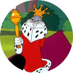
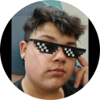
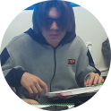

Começo da produção

Origens
O projeto Reborn era muito diferente no começo, passando por muitas alterações e reestruturações completas antes de ser decidido qual seria a melhor ideia. Uma das sugestões que mais influenciou o rumo do desenvolvimento foi a de um jogo focado em movimento preciso e veloz, inicialmente, a idéia era do jogador possuir um gancho que seria utilizado tanto para movimento quanto para combate, a ideia eventualmente evoluiu de modo que ambas as mecânicas utilizadas para se movimentar pelo mapa e as de combate seriam interligadas, gerando decisões mais interessantes para o jogador.
Desenvolvimento
Após definirmos a ideia do jogo, começamos a criar conceitos de histórias, cenários e personagens, escolhendo aqueles que consideramos os melhores. Decidimos fazer o site que você vê agora, para hospedarmos o download do projeto e documentar o progresso do mesmo. Com as ideias colocadas no papel, começamos a criar um protótipo do jogo em um programa simples, nada tão chique- mas bom o suficiente para o propósito de um protótipo, mostrando toda a primeira área e os inimigos que aparecerem na mesma, com uma surpresa no final, isso tudo facilitaria na hora de desenvolver o resto do jogo de modo mais polido depois, além de mostrar para pessoas possivelmente interessadas como o jogo em si é.
Planos futuros
Estamos trabalhando duro para que no futuro possamos completar Reborn de um modo onde a qualidade e a experiência são satisfatórias, não só para nós, os desenvolvedores, mas também para o público, isso envolve criar mais áreas, mais inimigos, contar história que temos planejada, e mover o jogo para um programa mais bem equipado para os nossos propósitos, tirando ele de um simples protótipo e o levando para um jogo completo. Várias alterações serão feitas ao que se vê atualmente, mas garantimos que todas levarão a um produto final melhor.
Desenvolvedores
-
Thiago Fonseca
-

Nicolas Lepore
-

Henri de Araujo
-

Gabriel Carli